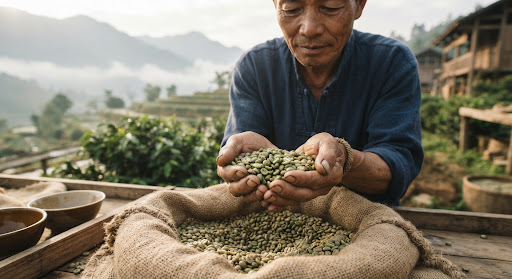
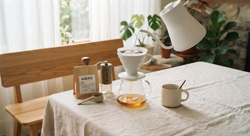
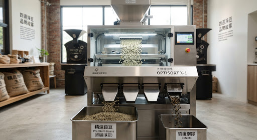
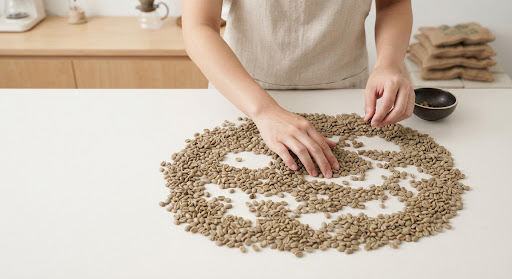
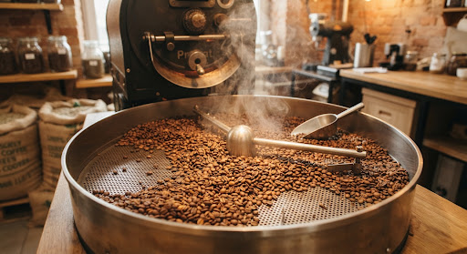
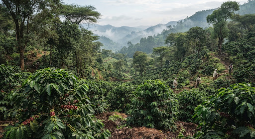
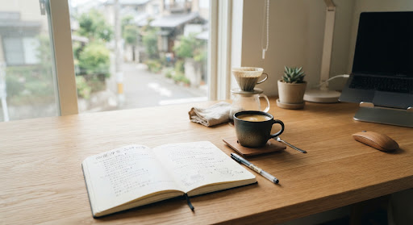

從一顆豆子開始的堅持
創辦人為尋求一杯每日晨間都能安心暢飲、溫和純淨無雜味的黑咖啡，踏上尋訪健康純淨產區與極致挑豆的旅程。


四道挑豆工序淨化率
99.8%
莊園單一產區微批次
100%
為了每天那一杯舒心純淨
「咖啡不該帶來負擔，而該是澄澈專注的陪伴。」
創辦人過去因體質敏感，對市售含混瑕疵豆與過度烘焙的咖啡深感困擾。市面常見的量產咖啡豆中，不可避免地混入蟲蛀豆、黑豆或內部發霉的瑕疵豆，這些隱形微瑕往往帶來雜味與乾澀口感。
為了打破「好咖啡必須靠重度烘焙遮掩瑕疵」的妥協，創辦人立志打造極致純淨、徹底去除所有蟲蛀、發霉與黑豆瑕疵的澄澈黑咖啡。回歸咖啡果實最原初的高山純淨甜韻，提供不刺激感官、溫和無負擔的純粹日常享受。
尋豆與嚴選歷程時間軸
溯源探訪
深入衣索比亞與哥倫比亞海拔 1,900 公尺以上無毒健康微型莊園，親自檢視土壤水源與原生咖啡果實培育環境。
建立標準
經歷逾 300 次風味盲測與生豆比對，確立獨創「四次純淨挑豆」標準作業準則（SOP），重新定義乾淨口感。
光學精準
引進工業級高精度紅外線光學色選設備，搭配人工細緻雙重交叉篩選，實現微米級內部瑕疵剔除。
品牌誕生
「一遇」正式面世，讓真正不帶雜質、純淨無負擔的精品咖啡，走入千家萬戶晨間工作與日常儀式中。
四次挑豆、去除瑕疵豆，乾淨順口
比常規品牌多出三倍挑豆工時，剔除每一顆可能影響風味與純淨的瑕疵豆。

產地人工初選
於高海拔莊園採收後即刻初步人工剔除未熟果與過度發酵豆。在產地源頭第一線把關，確保唯有飽滿純淨的健康鮮紅果實進入發酵水洗工序。

機器光學色選
進口生豆進入高精度近紅外線比對光譜系統。毫秒級氣閥高速剔除肉眼難以察覺的微小蟲蛀孔、內部隱蔽發霉與細微異色豆，精確度達 99.5%。

人工細緻複選
在 5000K 演色性標準挑豆台上，由資深杯測師與挑豆師逐批手工翻檢。彌補機器無法辨識的畸形豆與結構密度不均之微瑕豆，確保批次純淨無虞。

烘焙後最終挑豆
出爐冷卻後第四度檢視。剔除烘焙過程膨脹不均的貝殼豆、吸熱不良的死豆與烘焙不均豆，守護每一杯萃取時杯中極致純淨甜感與滑順度。
「乾淨的咖啡因，陪伴你專注工作的每一刻」
不以強烈焦苦刺激感官，唯有甘潤通透的純淨甜感，成為你高產能日常最安心的後盾。
健康來源 × 生活品味
咖啡不只是飲品，更是對身體的溫柔款待與日常思緒的錨定。

自然澄澈的產地風土
堅持單一產區微批次採購，契作莊園遵循永續農法與遮蔭栽植，尊重土地自然循環，使果實蘊蓄豐富有機酸與天然蜜甜。

極簡工作日常的純淨儀式
在快節奏的工作開端，以 3 分鐘的手沖注水儀式梳理思緒。乾淨的咖啡因溫和喚醒感知，陪伴專注而清晰的思考歷程。
溫潤甘甜的味覺記憶
徹底剔除瑕疵豆的咖啡，即使隨著時間完全冷卻，依然滑順清甜、齒頰生津，杯底不留焦苦雜味，只有細緻悠長的水果回甘。
親自感受，杯底不留苦澀的澄澈咖啡
我們嚴選每一個產季的微型批次，為你手工剔除每一顆瑕疵。今天就為自己換上一杯真正溫和純淨的晨間黑咖啡。
全店採用食品級單向透氣排氣閥鋁箔封裝 · 烘焙後 48 小時內新鮮寄送